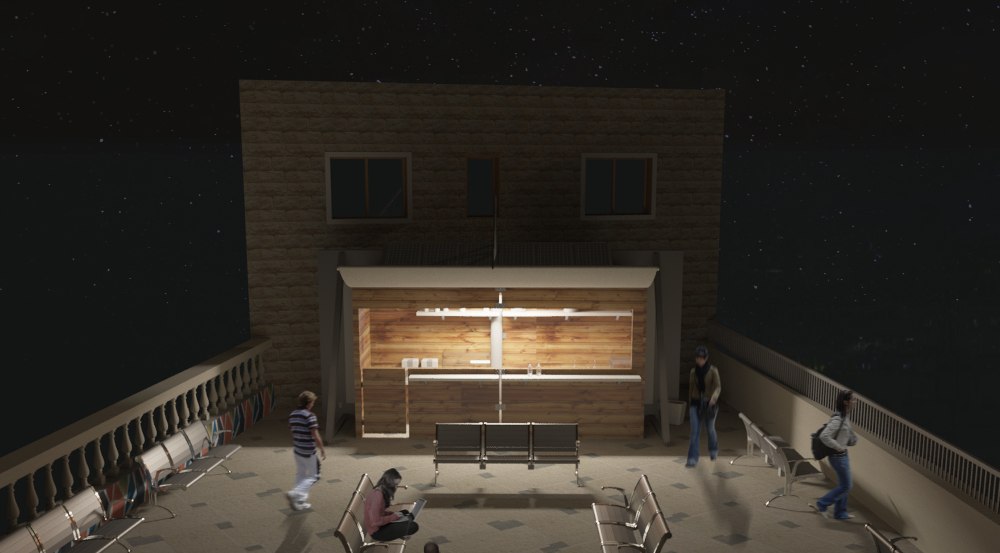

Mobile Kiosk
Year | Spring 2015 | 3rd Year BSc.
Type | Kiosk
This project is based around the idea of exploring various meanings and relationships influenced by the principles of structuralism. Focusing on attaining to individuals needs within a context of an increasing social interaction between one-another, drawing a constant relation from elements that in themselves, in their own character and in their substance can change.
As to creating a structure that is eco-friendly in it's nature, that benefits it's surroundings without acting on it. Thus, having it as simple as possible form wise so as to let relations act as structures, while integrating environmentally responsive materials in it's design.
The kiosk is located on the terrace of the GJU Architecture Campus in Amman with the intention to create a space rather than a form to change the circulation pattern of people on the terrace.Also enhancing the actual benches by adding a rechargeable power source to them.